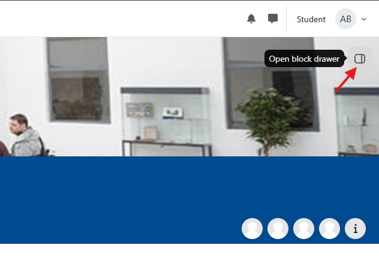
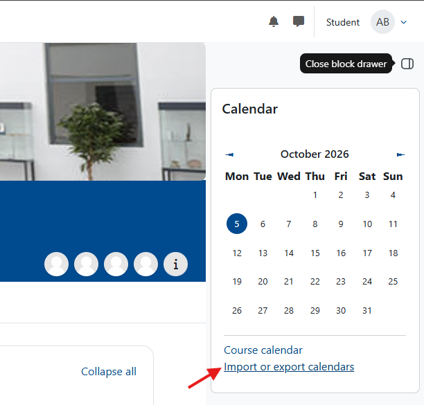
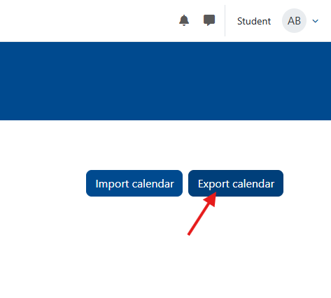
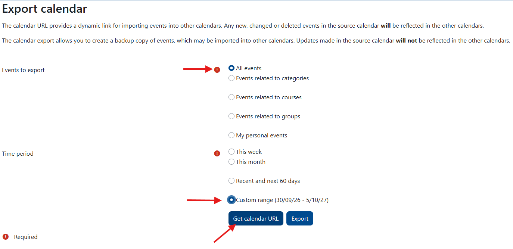

WueCampus Calendar Export & Auto-Sync
Follow this guide to export a live auto-syncing calendar URL for all events in a specific WueCampus course and subscribe to it in your personal calendar app.
Step 1: Export and Get Your Live Sync URL
-
1 Open your course & Open the Block Drawer
Go to wuecampus.uni-wuerzburg.de, log in, and open your course page. Click the Open block drawer icon in the top-right corner to expand the side panel if it is hidden.

-
2 Click "Import or export calendars"
In the Calendar block located inside the right drawer, click the Import or export calendars link below the month view.

-
3 Click "Export calendar"
On the next page, click the blue Export calendar button.

-
4 Configure Export Settings & Get URL
Set the configuration options as follows:
- Events to export: Select All events.
- Time period: Select Custom range.
Click the blue Get calendar URL button, then highlight and copy the generated link.

Step 2: Subscribe in Your Personal Calendar (Auto-Sync)
Choose your preferred calendar application below to complete the subscription using your copied URL:
Google Calendar
- Open Google Calendar.
- On the left sidebar, click the + icon next to Other calendars.
- Choose From URL.
- Paste your copied WueCampus URL and click Add calendar.
Apple Calendar (macOS / iOS)
- Open Apple Calendar.
- Go to File → New Calendar Subscription...
- Paste the URL and click Subscribe.
- Set the auto-refresh rate (e.g., Every day or Every hour) and click OK.
Microsoft Outlook
- Open Outlook (Web or Desktop) and switch to Calendar view.
- Click Add calendar → Subscribe from web.
- Paste the URL, enter a name for the calendar, and click Save.